Non-medics
Your job is not to fully heal the casualty by yourself. Get them out of immediate danger, slow or stop deterioration, and hand them to a medic. Medics are more effective at giving treatments, and carry more medical supplies.
A complete player reference for ACE Medical, our custom settings, and features added by the Misfits Aux mod.
Misfits operations use ACE Medical as their foundation. Our Aux mod adds custom treatments, changes to some treatment rules, and a lightweight airway and breathing system. The aim is to add depth for medics without making ordinary first aid intrusive or unnecessarily complicated.
How to use this guide: select a tab below to browse each part of the system.

ACE Medical can be intimidating at first, but the most important priorities are easy to remember. You do not need to understand every system inside and out - just enough to keep them alive to get to a medic.
Your job is not to fully heal the casualty by yourself. Get them out of immediate danger, slow or stop deterioration, and hand them to a medic. Medics are more effective at giving treatments, and carry more medical supplies.
Organise the treatment rather than trying to do everything alone. Give nearby players clear jobs: CPR, bandaging, security, carrying equipment or preparing evacuation.
Remember: an unconscious casualty may have several problems at once. Fixing one value does not guarantee that they will wake up immediately.
Open the medical menu with H, or through ACE interaction. Confirm the patient's name before treating, select a body region on the figure, then choose the appropriate tab and action.

A blue body part is not necessarily finished: bandaged wounds may still reopen until stitched.
Most actions are contextual. Bandages apply to the wounded region; medication and IVs are normally given through an arm or leg; airway actions use the head. If an action is missing, check your selected body part first.
Review the treatment log, previous examinations and administered medication. Check this before repeating drugs.
Check the patient's response, pulse and blood pressure.
Apply bandages, apply or remove tourniquets, and splint fractured limbs.
Administer injectors and tablets, including morphine, epinephrine, painkillers, TXA and the Universal Antagonist.

Give blood, plasma or saline IVs, perform CPR, stitch wounds with the Surgical Kit, and use the PAK when its conditions are met.
Check the airway and breathing, perform manual airway manoeuvres, use the recovery position or Airway Tube, and measure SpO₂.


ACE does not use a single visible health bar. Incoming damage creates injuries on individual body parts. The wound's type, size and location determine how quickly it bleeds and how difficult it is to close. Trauma also produces pain, may fracture limbs, and can contribute to unconsciousness or cardiac arrest.
Avulsions, velocity wounds, punctures, cuts, lacerations, abrasions and crush injuries have different bleeding and bandaging characteristics, but generally open wound = pain and bleeding.
Bruises represent trauma but do not bleed, cannot be bandaged or stitched, and deliberately do not block our PAK action. Bruises can contribute to pain, so kinda represent a "longer term" state of damage taken, like stitched wounds. They can be removed with the PAK.
Pain produces visual effects, increases weapon sway, slows movement, and can contribute to unconsciousness if it gets severe enough. Different pain relief treatments exist.
Fractured limbs reduce mobility or weapon handling. Apply a splint once bleeding is controlled. Untreated fractures block the PAK under our normal settings.
Exact performance varies by wound type; these ratings are a practical quick reference.
| Bandage | Efficiency | Reopening | Suggested use |
|---|---|---|---|
| Basic | Reliable all-rounder. Take this as your basic bandage in 99% of situations. | ||
| Packing | Slightly better at closing large/multiple wounds. | ||
| Elastic | Will close mutliple wounds with each bandage, but wont last. | ||
| QuikClot | Long-lasting, so good for when a medic won't be available for a while. |
A bandage closes a wound and stops that wound bleeding, but it is a temporary repair. Movement and time can allow a wound to reopen. A medic uses the Surgical Kit and sutures to make bandaged wounds permanent. Sutures are consumed as wounds are stitched.
Tourniquets: will immediately stop bleeding from every wound on the affected limb. Use them to buy time, bandage beneath them, then remove them promptly and recheck the limb. They cause increasing pain and prevent medication or IV fluid from circulating out of that limb.
A healthy patient begins with approximately 6 litres of blood. Open, bleeding wounds will slowly deplete this volume. Large wounds and multiple wounds bleed faster, and continued blood loss lowers blood pressure until the patient becomes unconscious, enters cardiac arrest or dies.
Heart rate changes through trauma and medication. Morphine lowers it; epinephrine raises it etc. Extreme values may cause a player to fall unconscious. Always check the triage log to see what medication has been given, and how recently.
Blood pressure reflects both heart activity and circulating volume. A heart rate can look acceptable whilst in reality the pressure is dangerously low because the patient has lost too much blood.
No pulse means CPR. CPR creates an opportunity for the heart to restart, but it cannot compensate for uncontrolled bleeding or critically low volume. Its good to have someone giving CPR while the underlying wounds/issues are treated, but this should never be at the expense of security.
Once dangerous problems are corrected, ACE periodically checks whether an unconscious patient can recover. Epinephrine improves the chances of a stable patient waking up, but it is not a guarantee.
Our stability rule: A stable patient must have more than 85% of their blood volume (only "lost some blood"), have a HR of between 50-120, a BP of 20/100 - 160/160, have an unobstructed airway and be breathing (and thus be building to an SpO2 of >90%), have an unobstructed airway. Open wounds can decrease the chances of waking up but will not prevent it.
Misfits Medical has a KAT-style respiratory loop without KATs oxygen tanks, pneumothorax, chest drains or a full respiratory simulation.
Unconscious patients can develop an obstruction or full occlusion. Chemical exposure can also interfere with the airway. A blocked airway prevents effective breathing and causes blood oxygen to fall.
SpO₂ represents the oxygen carried in the patient's blood. Breathing maintains SpO2 levels at >90%. Shallow or absent breathing reduces SpO2 over time. Values below 90% are dangerous and can prevent the patient from being considered stable enough to wake.
If the airway is clear but they are not breathing: check pulse, blood pressure, blood volume and cardiac arrest. Continue CPR when pulseless while keeping the airway managed.
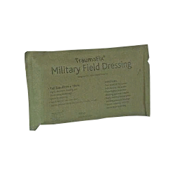
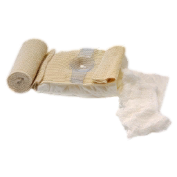

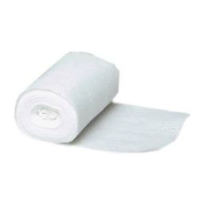
Close open wounds and stop their bleeding. The four variants differ in closing efficiency and resistance to reopening.
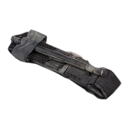
Immediately stops limb bleeding. Temporary, painful and blocks medication or IV circulation through that limb.
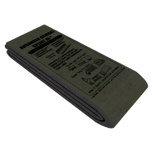
Treats a fractured limb and restores mobility or weapon handling.
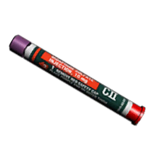
Strong pain relief that lowers heart rate. Repeated doses can dangerously suppress the patient.
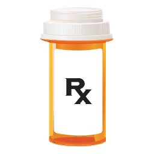
Gentler, slower pain management for less severe pain.
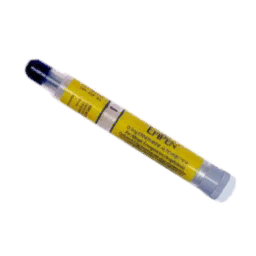
Raises heart rate and improves recovery opportunities. It does not replace blood or guarantee consciousness.
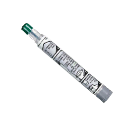
Lowers an excessively high heart rate caused by medication. Should not be used as a routine treatment.


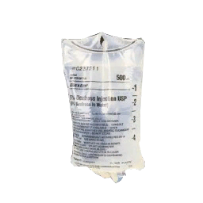
Restore circulating volume over time and are restricted to medics in our settings.
The Surgical Kit consumes sutures to permanently close bandaged wounds.
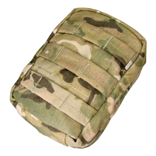
Provides a final full treatment, but only appears after our stability and treatment requirements are met.
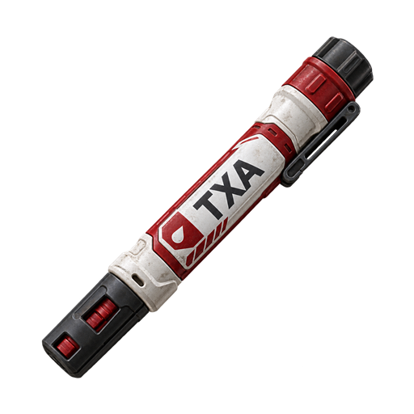
Medic-only treatment that modestly reduces bleeding for a limited time. It does not bandage, stitch or replace blood.
Medic-only emergency treatment that clears all active medications. Medics may self-administer it.
A 100 mL emergency volume stopgap usable by non-medics.
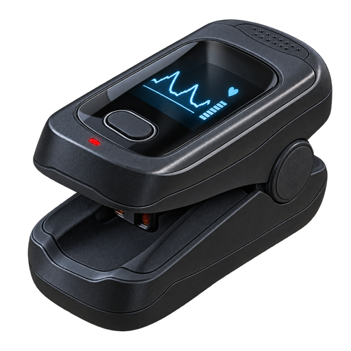
Measures the patient's SpO₂ percentage.
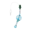
Reliably clears and maintains the airway and improves SpO₂ recovery.
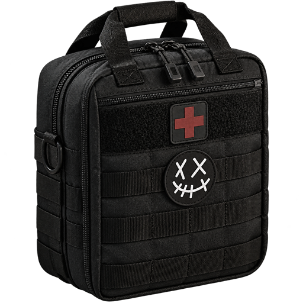
A deployable persistent supply case. Repacking preserves its remaining contents.
Moves casualties, folds for recovery and counts as a medical facility for permitted treatments.
With our default settings, the patient must be alive and conscious, no longer bleeding, have stable circulation and sufficient blood volume, have every bandageable wound bandaged and stitched, and have every fracture splinted. Bruises are ignored because the PAK is the only way to remove them. The PAK must also be used at an allowed medical facility or vehicle.
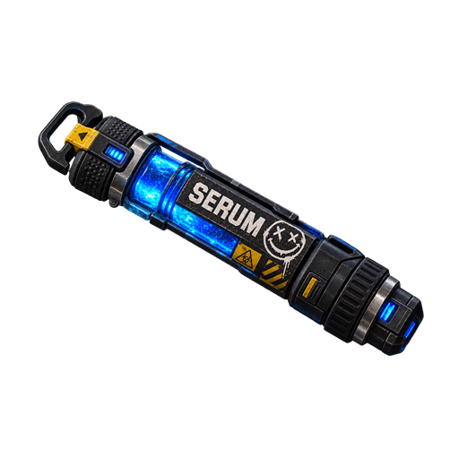
A questionably tested stimulant with temporary audiovisual and movement effects.
Clinically proven to produce sarcastic advice and essentially nothing else.
Report who is down, where they are, whether the area is safe, and the immediate problem. Do not wait until you have exhausted your own supplies.
Anyone can bandage, perform CPR, carry a casualty or provide security. A medic should direct priorities and reserve their attention for advanced treatment.
Dragging begins quickly but moves slowly. Carrying takes longer to start but moves faster. Use the stretcher for longer movement and treatment at a medical position.
A patients situation can change rapidly. Check vitals as often as you need to, and communicate with others working on the same patient to avoid dangerous overlaps in medication, or treating the same wounds.
Check consciousness, bleeding, circulation, blood volume, stitched wounds, splinted fractures and whether you are at a permitted facility. Bruises are not blockers.
the correct body part, confirm that you carry the item, check your medical permission level and verify that the patient's condition makes the action valid.
Work through every system rather than repeatedly adding epinephrine: bleeding, volume, pulse, pressure, airway, breathing, SpO₂, pain and medication history.
It is extremely rare for treatments to not work. If something seems like it is not working, there is usually a bigger underyling cause like other medications, pulse, blood pressure, heart rate etc. so check those first. If you find a genuine issue, retain as much detail as possible and report it to the zeus after the mission.
Do not load Misfits Airway alongside KAT Airway. The Misfits system is our compact alternative.